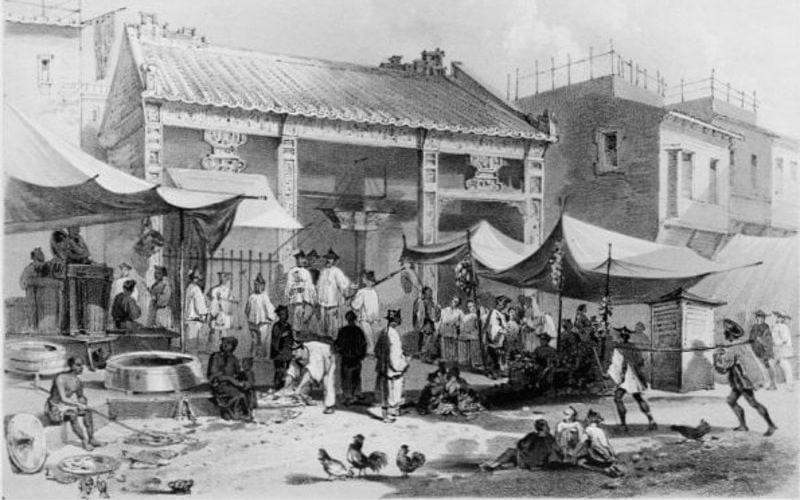

Historia
CHINA
En China, en el 3000 a.C. se consumían legumbres germinadas.
CIVILIZACIÓN ESNIA
La civilización Esenia en época de Cristo aplicaban técnicas de germinación.
OCCIDENTE
En Occidente ( s. XVIII) el navegante James Cook los utilizó con su tripulación para evitar el escorbuto que se produce por falta de vitamina C al estar mucho tiempo sin consumir productos frescos.
ESTADOS UNIDOS
Se recomendaron en la segunda guerra para evitar la desnutrición y el escorbuto en EEUU. Luego cayeron en desuso.
HUNZAS
Los Hunzas, comunidad del norte de Pakistán, fue conocida en los años ‘70 a través de National Geographic. Fue conocida como una tribu longeva con buena salud. Dentro de su alimentación están incluidos los germinados.
ANN WIGMORE
En 1959 Ann Wigmore comienza a promover el uso de brotes y germinados en EEUU. A partir de esta época se realizan más investigaciones sobre las ventajas de incluir germinados en la alimentación.